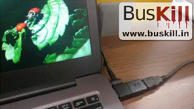
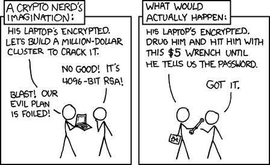

What is BusKill?¶
BusKill is the world’s first laptop kill cord–it’s a hardware Dead Man’s Switch that executes some user-configurable trigger when your machine is physically separated from you.

The trigger that’s executed when the cable’s connection is severed can either [a] lock the screen or [b] shutdown the machine.
Advanced users can add auxiliary triggers, such as a self-destruct trigger that wipes the LUKS header, making the entire disk permanently inaccessible (even to rubber-hose cryptanalysis).
Note
If you purchase a BusKill cable, or use the BusKill App, it will only ship with non-destructive triggers that will not cause data-loss.
BusKill can protect the data stored on your (encrypted) device (and any accounts that you’re currently logged-into) from a snatch-and-run thief.

Rubber Hose Cryptanalysis (source: xkcd)
Who Uses BusKill?¶
There are several use-cases for BusKill. It can be useful for:
✈️ Travelers¶
The classic use-case for BusKill is to protect a traveler’s devices and accounts when using the device in public, such as a café when taking holiday in Paris or a coworking hot desk when on a business trip in San Francisco.
BusKill can protect a tourist’s bank accounts from a snatch-and-run laptop thief when logged-into online banking.
🎙️ Journalists¶
In many countries, reporting the truth can be a life-threatening occupation.
BusKill can help journalists operating in an oppressive regimes keep their documents and their sources safe when the political police suddenly raid their workplace.
☮️ Activists¶
Many oppressive governments and businesses have imprisoned and murdered peaceful protesters.
BusKill can keep an activist’s affinity group safe when the secret police suddenly raid an organizer’s home.
₿ Crypto Traders¶
In the cryptocurrency space, “you are your own bank”.
BusKill can protect the private keys stored on a crypto trader’s machine while trading OTC or on an exchange.
💼 Businesses¶
Business has always been the backbone of infosec. Data stored on employee’s laptops (whether private keys or IP) can easily cause millions or billions of dollars in losses to a company.
BusKill can prevent an unlocked computer from ending-up in a competitor’s hands.
🕵 Military/Intelligence¶
BusKill can be a life-saver for intelligence operatives behind enemy lines.